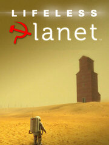

Lifeless Planet
Lifeless Planet
Details
|  | |
| Playtime | 1h 14m 0s |
| Last Activity | 7/12/2014 2:38:07 |
| Added | 8/19/2023 14:50:25 |
| Modified | 8/19/2023 20:27:23 |
| Completion Status | Played |
| Library | Steam |
| Source | Steam |
| Platform | PC (Windows) |
| Release Date | 6/6/2014 |
| Community Score | 60 |
| Critic Score | 61 |
| User Score | |
| Genre | Adventure Indie Puzzle |
| Developer | Stage 2 Studios |
| Publisher | Lace Games Serenity Forge Stage 2 Studios |
| Feature | Single Player |
| Links | Official Steam Wikipedia Twitch |
| Tag | |
Description
PREMIER EDITION
While seeking life on a distant planet, an astronaut discovers an abandoned Russian town. He suspects his mission is a hoax until a mysterious young woman saves him from a strange and deadly phenomenon... Lifeless Planet is a third-person action-adventure that features an old-school sci-fi story and spectacular environments in the spirit of classic action-adventures.
After a hard landing on the planet, the astronaut discovers the planet that was reported to be rich with life is instead a barren wasteland. When he goes searching for his crew, he makes a more startling discovery: evidence that humans have already been to this planet years ago! When he comes upon a deserted Soviet-era Russian town, he struggles to make sense of his mission. Did his light-speed travel to the planet send him back in time? Or is this all some strange Cold War hoax?
Along the way, the astronaut meets a Russian woman, Aelita, who is somehow able to survive the hostile atmosphere of the planet. Through an unusual natural phenomenon, her skin causes the soil to glow green under her feet. The player must use these glowing tracks as a guide across the planet past treacherous and deadly threats. Is she leading him to safety... or an untimely death?
Lifeless Planet was inspired by Cold War era science fiction stories, posing questions about humankind's desire for space travel. What if you journeyed across the galaxy to another planet, only to find humans had already been there? What kind of person would sign up for a one-way mission, leaving behind planet Earth and everyone they've ever known and love... to go in search of an Earth-like planet?
Equipped with a limited-use jet-pack and a mobile robotic arm, the player must use wits and skill to solve puzzles, unravel the mystery, and survive the Lifeless Planet!
Key Features:
While seeking life on a distant planet, an astronaut discovers an abandoned Russian town. He suspects his mission is a hoax until a mysterious young woman saves him from a strange and deadly phenomenon... Lifeless Planet is a third-person action-adventure that features an old-school sci-fi story and spectacular environments in the spirit of classic action-adventures.
After a hard landing on the planet, the astronaut discovers the planet that was reported to be rich with life is instead a barren wasteland. When he goes searching for his crew, he makes a more startling discovery: evidence that humans have already been to this planet years ago! When he comes upon a deserted Soviet-era Russian town, he struggles to make sense of his mission. Did his light-speed travel to the planet send him back in time? Or is this all some strange Cold War hoax?
Along the way, the astronaut meets a Russian woman, Aelita, who is somehow able to survive the hostile atmosphere of the planet. Through an unusual natural phenomenon, her skin causes the soil to glow green under her feet. The player must use these glowing tracks as a guide across the planet past treacherous and deadly threats. Is she leading him to safety... or an untimely death?
Lifeless Planet was inspired by Cold War era science fiction stories, posing questions about humankind's desire for space travel. What if you journeyed across the galaxy to another planet, only to find humans had already been there? What kind of person would sign up for a one-way mission, leaving behind planet Earth and everyone they've ever known and love... to go in search of an Earth-like planet?
Equipped with a limited-use jet-pack and a mobile robotic arm, the player must use wits and skill to solve puzzles, unravel the mystery, and survive the Lifeless Planet!
Key Features:
- Explore 20 unique and atmospheric environments on a vast and treacherous planet.
- Follow a mysterious young woman as she guides you past dangerous terrain and deadly life-forms.
- Investigate the startling discovery of an abandoned Russian town.
- Experience an exciting and intriguing story through rich graphics and cinematic cut-scenes.